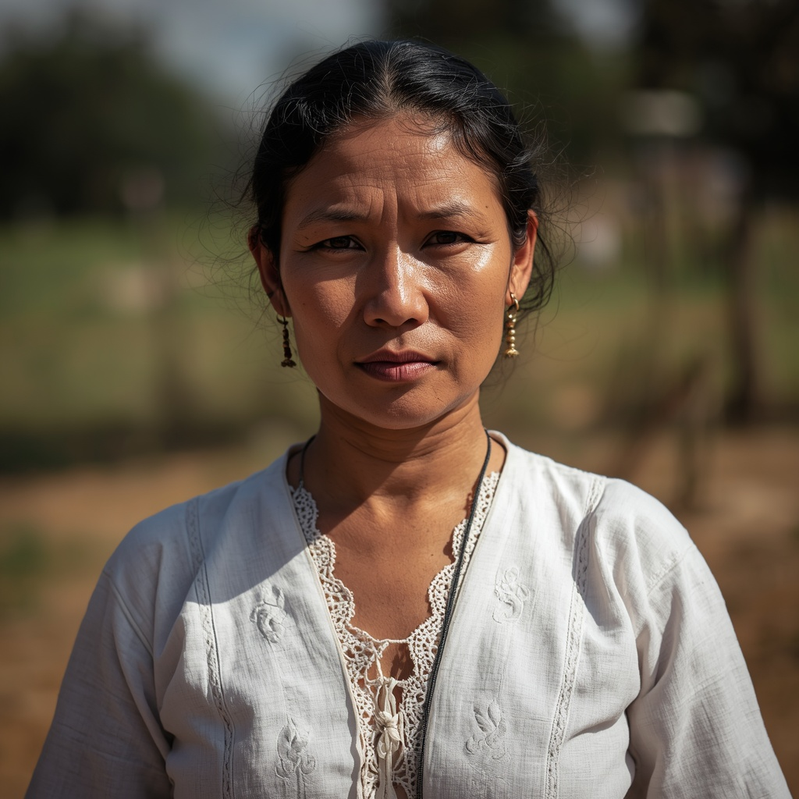

🧑🤝🧑 世界の民族・人びと
People of the World。国境を越えて暮らす人びとを、地域ごとに紹介します。伝統だけでなく、今の暮らしも一緒に。

グアラニー
🗣 使用言語
グアラニー語（パラグアイではスペイン語と並ぶ公用語）、スペイン語
👥 人口の目安
パラグアイ・アルゼンチン・ボリビアの合計で30万人以上（ブラジルを含めた南米全体では約40万人）
👘 伝統衣装
伝統的には綿を用いた簡素な貫頭衣を着用していたが、現在はスペイン系文化と融合し、パラグアイ特有の繊細なレース刺繍「ニャンドゥティ」や手織物などの伝統工芸に文様が受け継がれている。
🏠 住居
複数の家族が首長のもとで共同生活を送る大きな共同住居「マロカ（オカ）」が伝統的な居住形態であった。
🍲 食文化
キャッサバ（マンジョカ）、トウモロコシ、野生動物の肉、蜂蜜を伝統的な食料とし、パラグアイ全土で親しまれる「マテ茶（イエルバ・マテ）」はグアラニー起源の飲み物として知られる。
🎵 音楽・踊り
パラグアイ特有の「パラグアイ・アルパ（竪琴）」を用いた音楽やケーナなどの笛を用いた演奏が、グアラニー系の文化的伝統と結びついている。
🎉 行事・祭り
スペイン統治時代のイエズス会伝道所（レドゥクシオン）の伝統を受け継ぎ、カトリックの聖人祭と先住民の伝統行事が融合した地域の祭礼が各地で行われている。
🙏 信仰・価値観
創造神ニャマンドゥ（「真の父、最初の者」）やトゥパを中心とするアニミズム的な信仰体系を伝統的に持ち、現在はカトリックやプロテスタントなどのキリスト教と融合した信仰形態が主流となっている。
📜 歴史
1608年からスペイン国王の許可のもとイエズス会による布教（伝道所＝レドゥクシオン）が進められ、1732年には30の伝道所に14万人以上のグアラニーが暮らしていたが、天然痘などの疫病により多数が命を落とした。1767年にイエズス会がスペイン領から追放されると伝道所の体制は終焉を迎えた。
🏙 現代の暮らし
グアラニー語はパラグアイの公用語として国民の多くに話され続けており、都市に住む人々も多い一方、アルゼンチンやボリビアの一部地域では森林や伝統的な土地を守る活動を行う共同体もある。
🇯🇵 日本との関係
パラグアイには1936年の移住地「ラ・コルメナ」建設以来、南米有数の日系人（ニッケイ）コミュニティが存在し、日本との経済・文化的なつながりが深い国として知られる。グアラニー系住民と日系社会との直接的な文化交流の記録は多くないが、同じパラグアイ社会の一員として共存してきた歴史がある。
🌍 関連する国


出典: https://en.wikipedia.org/wiki/Guarani_people(2026-09-01時点) / https://en.wikipedia.org/wiki/La_Colmena,_Paraguay(2026-09-01時点)